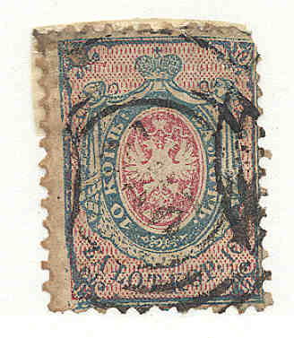
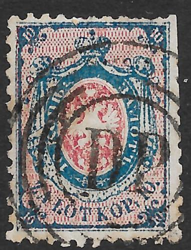

{kind=link}



Return To Catalogue - Regular issues1919-1923, part 1 - Regular issues 1919-1923, part 2 - Local issues - Local overprints - Miscellaneous and local issues - Upper Silesia
Note: on my website many of the
pictures can not be seen! They are of course present in the
catalogue;
contact me if you want to purchase the catalogue.
10 Kopecks blue and red
This stamp was no longer valid for use after 1865 and is the only stamp issued by Poland in the 19th century. The perforation of these stamps is roughly 12.
Value of the stamps |
|||
vc = very common c = common * = not so common ** = uncommon |
*** = very uncommon R = rare RR = very rare RRR = extremely rare |
||
| Value | Unused | Used | Remarks |
| 10 k | RR | RR | |
Similar stamps exist for Russia. Tyical cancellations:

Fourrings cancel nr 73: Lublin


182: Lodz and 241 Wloclawek
I know that the following 4 ring concentric
circles with number in the center were used at:
1 Warsaw (Warszawa)
47 Ostroleka
49 Wyszkow
55 Biala
63 Parczew
70 Sokolow
73 Lublin
102 Zwierzyniec
106 Tarnogrod
107 Opatow
108 Sandomierz
132 Skalbmierz
138 Radom
153 Przysucha
175 Granica
182 Lodz
187 Tomaszow
191 Kalisz
210 Sochaczew
217 Piatek
218 Plecka-Dabrowa
221 Konin
241 Wloclawek
250 Dobrzyn n.Drweca
251 Rypin
253 Plock
282 Kibarty
I have only seen these cancels in black.
(Railroad cancel)
A 3.5mm dot cancel surrounded by 6 rings was used as a railroad cancel.

Railroad cancel cancelled red "D.B."; Droga Bydgoska in
four concentric rings for Warsaw railway stations; other letters
exist in the center: "D.P." (Dworzec Praga) and
"D.W.".
(rectangular cancel with '1' in the center from Warsaw)
More on cancels can be found under: Russia special cancellations.
I've been told that the next stamp is a forgery:

(Forgery)
I posess some 'proofs' in black and blue (imperforate) with the central eagle design and background missing.
Only one stamp was issued in Poland in 1860. It was replaced with a russian stamp in 1863. From 1860 to 1916 the stamps of Russia, Germany and Austria were used in Poland (since Poland was divided between these countries).
{kind=link}